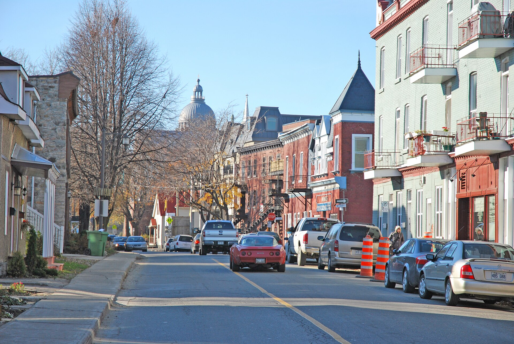
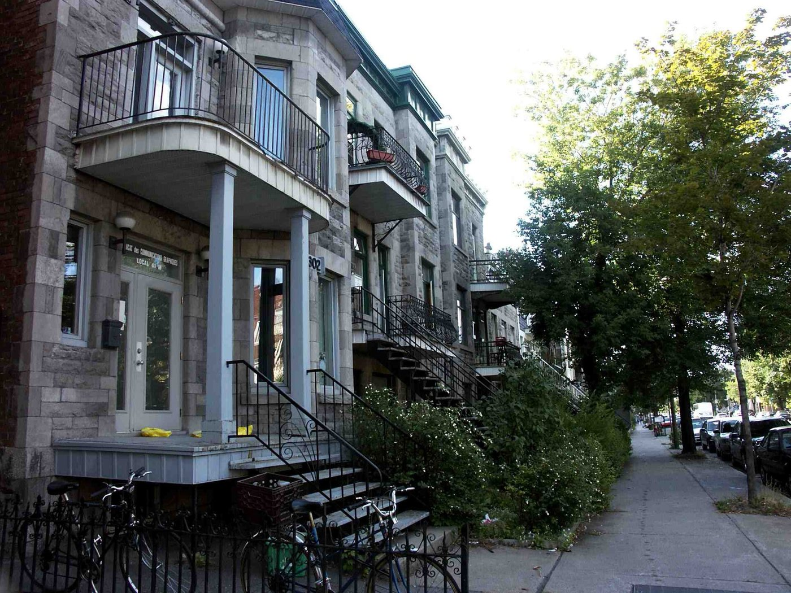
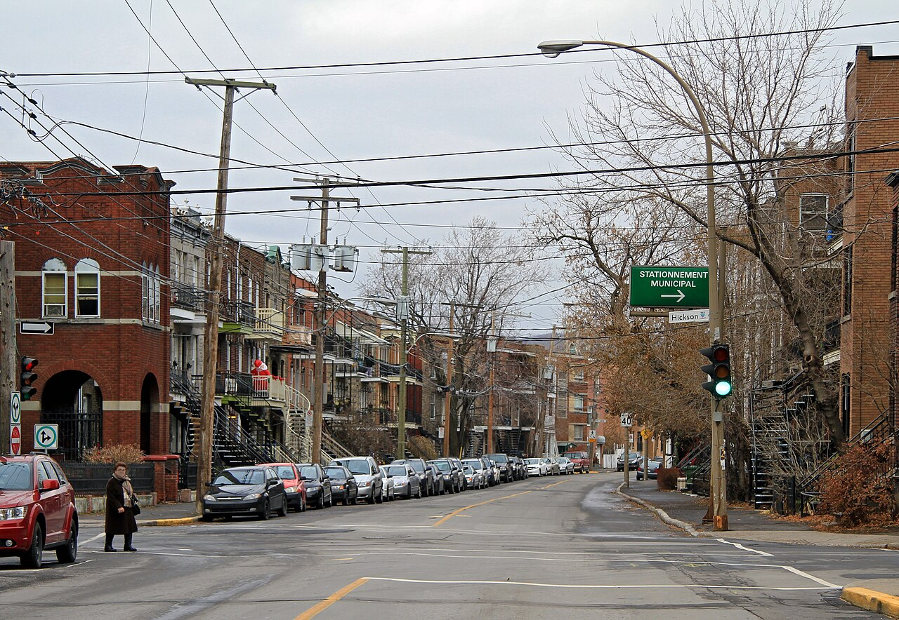
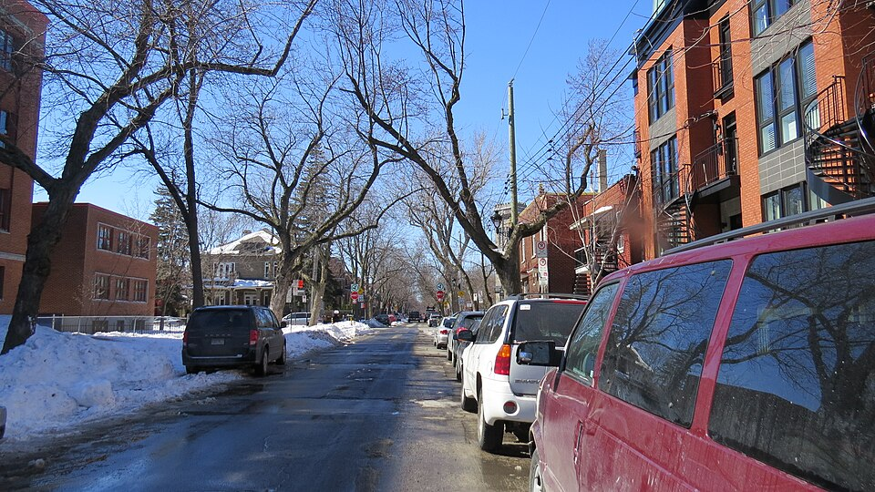

| Place | Local name | Phase years | Storeys | Roof | Window | Cladding | Garage |
|---|---|---|---|---|---|---|---|
| Lachine (borough of Montréal) | Brick duplex and triplex, detached or in continuous alignment Duplex et triplex en brique, détachés ou en alignement continu | 1855 – 1930 | 2 | flat | – | brick | – |
| Le Plateau-Mont-Royal (borough of Montréal) | Triplex with interior stair Le triplex avec escalier intérieur | 1880 – 1914 | 3 | flat | – | clay-brick | none |
| Le Plateau-Mont-Royal (borough of Montréal) | Triplex with exterior stair Le triplex avec escalier extérieur | 1880 – 1914 | 3 | flat | – | clay-brick-beige-brown | none |
| Rosemont–La Petite-Patrie (borough of Montréal) | Triplex with exterior stair Triplex de brique avec escalier extérieur | 1885 – 1930 | 3 | flat | vertical | clay-brick-red, clay-brick-beige-brown, grey-limestone | none |
| Saint-Lambert | Multi-dwelling building of plex type L'immeuble à logements multiples de type plex | 1875 – 1930 | 2–3 | flat | vertical | clay-brick | none |
| Le Sud-Ouest (Montréal) | Triplex with exterior stair Le triplex avec escalier extérieur | 1900 – 1945 | 3 | flat | vertical-2to1 | clay-brick, stone-rusticated | none |
| Verdun (borough of Montréal) | Three-storey plex with exterior stair L'immeuble de trois étages avec escalier extérieur | 1900 – 1930 | 3 | flat | vertical | clay-brick, stone | none |
| Villeray–Saint-Michel–Parc-Extension | Plex of the early 20th century Plex du début du 20e siècle | 1915 – 1940 | 3 | flat | vertical | clay-brick, stone | none |
| Villeray–Saint-Michel–Parc-Extension | Plex of the mid-20th century Plex du milieu du 20e siècle | 1940 – 1960 | 3 | flat | vertical | clay-brick, stone | none |
| Westmount | Greystone triplex with exterior stair Triplex en pierre grise à escalier extérieur | 1885 – 1900 | – | – | vertical | montreal-greystone | – |




